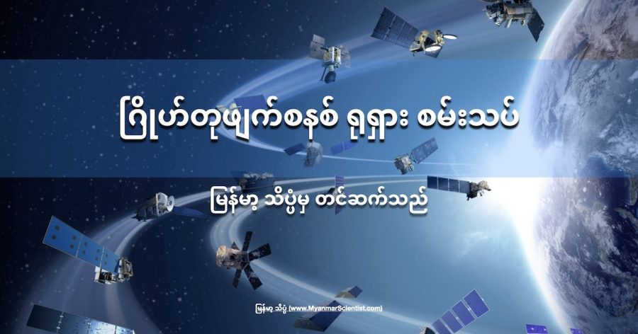

ကမ္ဘာ့ပတ် လမ်းကြောင်းထဲမှာ အာကာသ အမှိုက်တွေ၊ အပျက်အစီးတွေ မြောက်များစွာ ရုတ်တရက် ထွက်ပေါ်လာခဲ့ပါတယ်။ ဒီ အပျက်အစီး တွေကြောင့် အပြည်ပြည် ဆိုင်ရာ အာကာသ စခန်းပေါ်က ယာဉ်မှူးတွေဟာ အာကာသ စခန်းယာဉ်မှာ ဆိုက်ကပ်ထားတဲ့ ကမ္ဘာမြေ ပြန်ဆင်းမယ့် အာကာသ ယာဉ် သေးသေးလေး ထဲမှာ ခိုအောင်း နေခဲ့ ကြရပါတယ်။
အတည်မပြုနိုင်တဲ့ သတင်းတွေ အရတော့ ဒီ အပျက်အစီးတွေဟာ ရုရှား နိုင်ငံက ပြုလုပ်တဲ့ ဂြိုဟ်တုခွင်း စနစ် စမ်းသပ်မှုက ထွက်ပေါ်လာတာ ဖြစ်တယ်လို့ ဆိုပါတယ်။
“အမေရိကန် ပြည်ထောင်စု အာကာသ စစ်ရေးကွပ်ကဲမှု ဌာနသည် ကမ္ဘာပြင်ပ အာကာသ အတွင်း အပျက်အစီးများ ဖြစ်ပေါ်စေသော ဖြစ်ရပ်နှင့် ပတ်သက်၍ သိရှိထားကြောင်း” ဒီ ကွပ်ကဲမှု ဌာန ချုပ်က သတင်းဌာနတွေကို ဖြန့်ဝေတဲ့ email မှာ ဖော်ပြထားပါတယ်။
ဒီ ထွက်ပေါ်လာတဲ့ အပျက်အစီး တွေဟာ အပြည်ပြည် ဆိုင်ရာ အာကာသ စခန်းကြီး နားကနေ မိနစ် ၉၀ ကို တစ်ကြိမ် ဖြတ်ပြီး ပျံသန်းနေ ခဲ့ပါတယ်။
အခု အပျက်အစီး တွေနဲ့ ထွက်ပေါ်လာတဲ့ အချိန်ဟာ ကျွမ်းကျင်သူ ပညာရှင် တွေက ရုရှားဟာ ဒီရက်ပိုင်း အတွင်း ဂြိုဟ်တု ဖျက်ဆီးရေး စနစ် ကို စမ်းသပ်ခဲ့တယ် လို့ ပြောဆိုနေတဲ့ အချိန်နဲ့ ထူးထူး ခြားခြား တိုက်ဆိုင်နေ ပါတယ်။ ဒါ့ကြောင့်လဲ အများစု ကတော့ အခု အပျက်အစီး တွေဟာ ဒီ စမ်းသပ်မှုကြောင့် ထွက်ပေါ်လာတဲ့ အပျက်အစီး တွေ ဖြစ်နိုင်တယ်လို့ ခန့်မှန်း ပြောဆိုနေ ကြတာ ဖြစ်ပါတယ်။
အမေရိကန် နိုင်ငံခြားရေး ဌာနက ပြောရေးဆိုခွင့်ရှိသူ နက် ပရိုက်စ် (Ned Price) က နိုဝင်ဘာ ၁၅ ရက်နေ့က ပြုလုပ်တဲ့ သတင်းစာ ရှင်းလင်းပွဲမှာ ရုရှား နိုင်ငံက ဂြိုဟ်တုဖျက် စနစ် စမ်းသပ်ခဲ့ကြောင်း အတည်ပြု ပြောကြားလိုက်ပါတယ်။
“ဒီ စမ်းသပ်မှုကနေ ရှာဖွေ ထောက်လှမ်းနိုင်တဲ့ အပျက်အစီး အပိုင်းအစပေါင်း ၁,၅၀၀ ကျော် ပေါ်ထွက်လာခဲ့ ပါတယ်။ ဒါ့အပြင် ပိုမို သေးငယ်တဲ့ အပိုင်းအစပေါင်းလဲ သိန်းနဲ့ချီပြီး ထွက်ပေါ်ခဲ့ ပါတယ်။ ဒီ အပိုင်းအစ တွေဟာ ကမ္ဘာပတ် လမ်းကြောင်းထဲ ပတ်နေပြီး နိုင်ငံတကာရဲ့ အကျိုးစီးပွားကို ခြိမ်းခြောက်နေတဲ့ အနေအထား ဖြစ်နေပါတယ်” ဆိုပြီး ပြောကြား သွားပါတယ်။
အခု စမ်းသပ်မှုဟာ ဂြိုဟ်တုဖျက် စနစ် စမ်းသပ်တဲ့ ပထမဆုံး စမ်းသပ်မှုတော့ မဟုတ်ပါဘူး။ ၂၀၂၀ ခုနှစ် တုန်းကလဲ ရုရှားကပဲ ဂြိုဟ်တုဖျက် စနစ် စမ်းသပ်မှု ၃ ကြိမ် ပြုလုပ်ခဲ့ ပါသေးတယ်။ ဒါပေမယ့် အဲ့သည် စမ်းသပ်မှုတွေ ကတော့ အနိမ့်ပိုင်း ကမ္ဘာပတ် လမ်းထဲက ဂြိုဟ်တု အသေးလေး တွေကို ဖျက်စီးခဲ့တာ ဖြစ်ပါတယ်။
ရုရှားရဲ့ ဂြိဟ်တုဖျက် စနစ်မှာ ယခုအထိ စနစ် နှစ်မျိုးကို လေ့လာ တွေ့ရှိ ထားရပါတယ်။ ပထမ စနစ်က မြေပြင်က ပစ်လွှတ်တဲ့ ဒုံးကျည် စနစ် ဖြစ်ပါတယ်။ နောက်စနစ် တစ်ခုကတော့ အာကာသထဲမှာ အခြေပြုတဲ့ စနစ်ဖြစ်ပြီး ပြီးခဲ့တဲ့ ၂၀၂၀ ဇူလိုင်လက လွှတ်တင်ခဲ့တာ ဖြစ်ပါတယ်။ ဒီစနစ် ဘယ်လို အလုပ်လုပ်လဲဆိုတာကိုတော့ သေချာ မသိရ သေးပါဘူး။
Reference: Did Russia just launch an anti-satellite test that created a cloud of space junk? | Space
ဂြိုဟ်တုဖျက်စနစ် ရုရှား စမ်းသပ်

November 16, 2021
Other Posts
- မိုင်းထိသွားတဲ့ မြန်မာ့လေကြောင်းပိုင် ဒါကိုတာလေယာဉ်ကြီးကို ပြင်ဆင်ခဲ့စဉ်က
- မိုးကြိုးလွှဲ ဘယ်လို အလုပ်လုပ်လဲ
- ကမ္ဘာကို ပတ်နေတဲ့ ဂြိုဟ်တု ဘယ်နှစ်စင်း ရှိလဲ
- အိပ်မပျော်ရင် အိပ်ပျော်အောင် ဘယ်လိုလုပ်မလဲ
- Airbus ရဲ့ မြို့တွင်းသုံး လျှပ်စစ်မိုးပျံတက္ကစီ
- စကြာဝဠာဟာ black hole တွင်းနက်တစ်ခုအတွင်းမှာ တည်ရှိနေတာလား
- Essential Life Skills for Pre-School Children
- ဘာ့ကြောင့် ရေဘဝဲဟာ မျိုးပွားအပြီး ကိုယ့်ကိုယ်ကို သတ်သေ ရတာလဲ
- ပင်လယ်ရေငန်ကနေ ဈေးသက်သက်သာသာနဲ့ သောက်ရေသန့်ထုတ်နိုင်မယ့်စက်
- Milky Way ခေါ် နဂါးငွေ့တန်း ဂလက်ဆီ